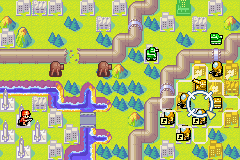
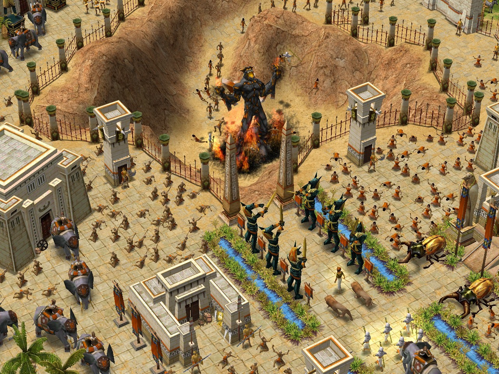
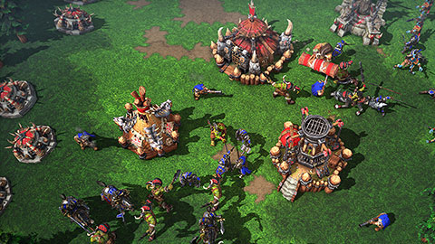
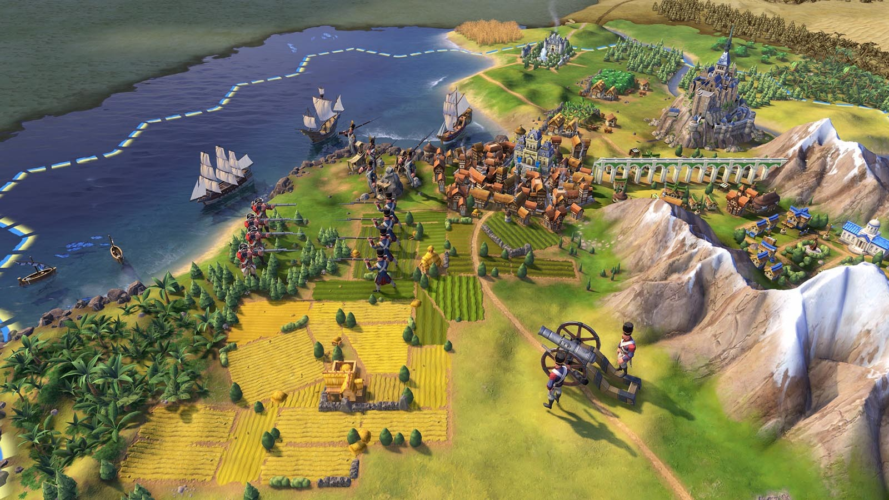

The Video Games
The beginning of this passion
I discovered video games when I was 6 years old thanks to my older brother. He is 6 years older than me, so he was always introducing me to new things. So I started playing video games with the Nintendo DS and with games like Advance War 2, Castlevania, Worms, Mario kart, Final Fantasy III or Crash Bendicoot. 1 or 2 years later my brother introduced me to the Playstation 2, where I discovered the Ratchet and Clank franchise. Around the same time I discovered Minecraft, Age of Empire 2 and League of Legend on Computer. A few years later I switched to Playstation 3, still with the Rachet and Clank franchise, I also discovered the Call of Duty franchise. And several years later I was able to buy a gaming computer and I was able to play old games again (minecraft, Age of Empire 2, League of Legend).
What are the advantages and disadvantages of video games?
My top 3 games that I played
N°1 : Minecraft
Minecraft est un jeu vidéo de type aventure « bac à sable » (construction complètement libre) développé par le Suédois Markus Persson, alias Notch, puis par la société Mojang Studios. Il s'agit d'un univers composé de voxels et généré de façon procédurale, qui intègre un système d'artisanat axé sur l'exploitation puis la transformation de ressources naturelles (minéralogiques, fossiles, animales et végétales)

N°2 : League of Legend
Minecraft est un jeu vidéo de type aventure « bac à sable » (construction complètement libre) développé par le Suédois Markus Persson, alias Notch, puis par la société Mojang Studios. Il s'agit d'un univers composé de voxels et généré de façon procédurale, qui intègre un système d'artisanat axé sur l'exploitation puis la transformation de ressources naturelles (minéralogiques, fossiles, animales et végétales)

N°3 : Age of Empire 2
Minecraft est un jeu vidéo de type aventure « bac à sable » (construction complètement libre) développé par le Suédois Markus Persson, alias Notch, puis par la société Mojang Studios. Il s'agit d'un univers composé de voxels et généré de façon procédurale, qui intègre un système d'artisanat axé sur l'exploitation puis la transformation de ressources naturelles (minéralogiques, fossiles, animales et végétales)

Some statistics
Here is about the number of hours I spent playing some games
Minecraft
I played Minecraft on computer for about 5000 hours and 500 hours on PS3
League of Legend
I played League of Legend on the computer for about 1,000 hours
Age of Empire 2
I played Age of Empires 2 on the computer for about 1,000 hours
Advance War 2

I played Advance War 2 on DS for about 700 hours
Age of Myhtology

I played Age of Mythology on the computer for about 500 hours
Warcraft 3 
I played Warcraft 3 on computer for about 500 hours
Starcraft 1

I played Starcraft 1 on the computer for about 200 hours
Starcraft 2

I played Starcraft 2 on the computer for about 100 hours
Civilisations 6 
I played Civilisation 6 on the computer for about 100 hours